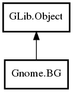

BG
Object Hierarchy:

Description:
public class BG : Object
Namespace: Gnome
Package: gnome-desktop-3.0
Content:
Static methods:
Creation methods:
Methods:
- public
bool changes_with_time ()
- public
Pixbuf create_frame_thumbnail (DesktopThumbnailFactory factory, Screen screen, int dest_width, int dest_height, int frame_num)
- public
Surface create_surface (Window window, int width, int height, bool root)
- public
Pixbuf create_thumbnail (DesktopThumbnailFactory factory, Screen screen, int dest_width, int dest_height)
- public void draw (
Pixbuf dest, Screen screen, bool is_root)
- public
bool get_draw_background ()
- public unowned
string get_filename ()
- public
bool get_image_size (DesktopThumbnailFactory factory, int best_width, int best_height, int width, int height)
- public
bool has_multiple_sizes ()
- public
bool is_dark (int dest_width, int dest_height)
- public void load_from_preferences (
Settings settings)
- public void save_to_preferences (
Settings settings)
- public void set_draw_background (
bool draw_background)
- public void set_filename (
string filename)
Signals: